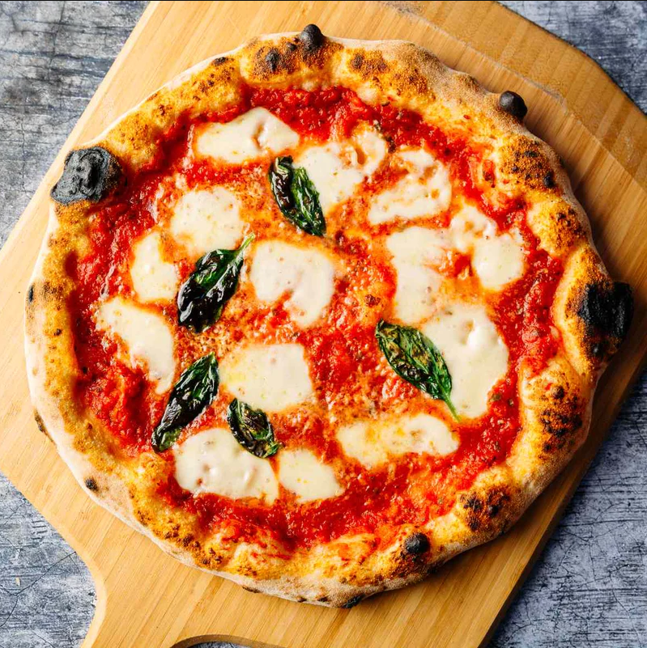

Discover the essence of Italy with our Pizza Margherita, a classic and iconic Neapolitan masterpiece.If you've ever wished to recreate this culinary gem in the comfort of your own kitchen, click here to find the recipe and embark on a delicious journey inspired by tradition

Indulge in our homage to Italy's culinary heritage with our signature Pizza Margherita. Named after Queen Margherita of Savoy's favorite flavors, this iconic Neapolitan creation showcases the vibrant colors of the Italian flag: luscious San Marzano tomatoes, creamy buffalo mozzarella, and fragrant basil leaves, all resting atop our hand-stretched thin crust. Baked to perfection in our wood-fired oven, each bite is a harmonious blend of simplicity and sophistication. Savor the essence of authentic Italian craftsmanship in every slice, where quality ingredients meet age-old tradition. Buon appetito!
home